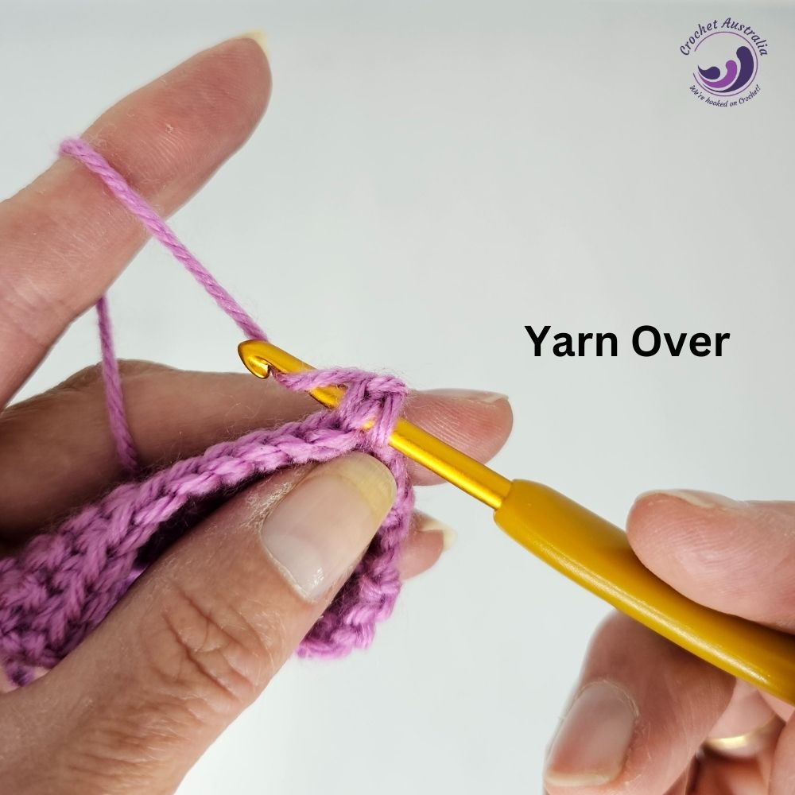
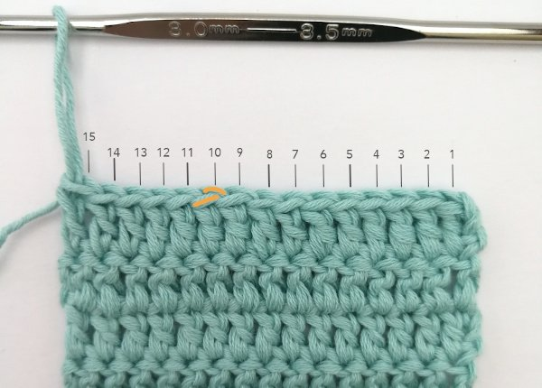
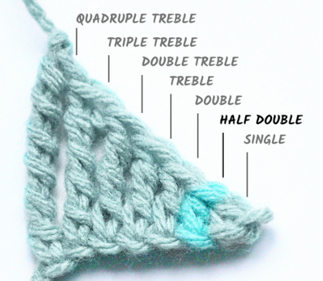

Crochet is a way of creating things by using a crochet hook to knot yarn in certain stitches. Crocheting is used to create many different kinds of products, like clothing, stuffed animals (known as amigurumi), or
all sorts of other unique things like bags, garlands, or whatever else you can think of! Crocheting uses more yarn than knitting does, but it is more easy to work with and more versatile. I will write out a
short introduction to some concepts commonly used in crochet!
Choosing Yarn
There are many different types of yarn and you should choose based on your project. Acrylic yarn is cheaper, and often more excessible than wool yarn, so you may be able to find it in more colors and types. Wool yarn is more
breathable and natural, it also can be more durable than acrylic yarn. There are also other types of yarn, like cotton, or alpaca wool, so it is always good to think about the type of yarn you want before you begin a new project!
Not only do you need to think about yarn type, but also yarn size. There are very thin yarns that are good for small projects, or more sheer stitches, and there are thicker yarns for sweaters or bigger projects. You can follow
the same crochet pattern and end up with very differently sized products based on what size yarn you used. So make sure you pick carefully, and reference the recommended yarn size if you are using a pattern!
Crochet Hooks
Crochet hooks come in a number of ranked sizes, usually marked in millimeteres (mm). An average crochet hook is usually between 3mm to 5.5mm, but they come in sizes ranging from 1mm to 50mm.
Most patterns will tell you a hook size, otherwise it is good to choose based on the size of your yarn. You should use a bigger hook the bigger the yarn is.
Things to Know About Crochet Stitches
Before we get into how to do each stitch, there are a few terms that should be gone over:
Yarning Over & Pulling Through
In order to understand the stitch directions below, first you need to know what it means to yarn over and pull through. Yarning over is the action of twisting your hook around the yarn in order to grab a loop. Once you have this
loop, you can "pull through", so you pull the hook through the stitch you hook is in. This will make a little more sense once you start learning the stitches, but you will hear these terms a lot, so it's important to keep them in mind!

Counting Stitches
Almost all crochet projects will require you to count your stitches. To count how many stitches you have, you first pick a starting stitch. If you look at the top of your crochet project, each stitch will look like a sideways V.
Start at the first stitch, then count how many Vs there are, that is how many stitches you have! This is also the same method used to know which stitch is next when you are crocheting down a row!

Stitch Height
You will often see things talking about "stitch heights". This is referring to how tall a stitch is. The shortest basic crochet stitch is a slip stitch, while the tallest basic crochet stitch is a treble crochet stitch.

Crochet patterns are simple to read once you get going, but have a few basic rules to follow.
Here is an example crochet pattern, we will use this one to explain the componenets of a pattern:
1. Ch 20
2. Inc 1, sc 3. 30 sc.
3-10. Sc in all. 30 sc.
11. fasten off, leaving a long tail for sewing.
As you can see in the example pattern, it is written in a numbered list. Each number represents a row. One row in crochet is when you go from one end of your project to the other.
The pattern will often omit writing to start with a slip knot, as it is the implied way to start most projects. If the project starts in a different way, ex. magic circle, it will be indicated in the pattern.
Where the pattern says 3-10, it means that for all rows 3, 4, 5, 6, 7, 8, 9, and 10 you will do the step it says, in this situation, single crocheting in all of the stitches.
In a situtation like row 2, where it telly you to increase in and then single crochet 3, it is NOT saying to do it once, but to repeat the pattern until you get to the end of the row.
Looking at the same row of the pattern, the number at the end, 30, represents the amount of stitches you should have once you have completed the row. You can count your stitches and make sure you have that many stitches!
As shown in step 11, you will finish a project by "fastening it off". This simply means to cut your piece of yarn with lots of extra so that you can sew it or weave it in, and pull it until the cut end comes through the loop.
To weave in the yarn end, you should use a darning needle, a large sewing needle, to sew the yarn end into your project so that it is not visible and won't come undone.
Citations:
https://www.crochetaustralia.com.au/wp-content/uploads/2023/10/how-to-yarn-over.jpg, https://images.squarespace-cdn.com/content/v1/619f84ab2ac7c539ead91ff9/8d9a84c7-7a5d-4872-a4d6-1945326cbf9c/counting-stitches-in-rows.jpg, https://craftsonair.com/wp-content/uploads/2022/09/HDC-Height-Comparison.png, https://www.youtube.com/embed/1dWIsyJdiF4?si=4YNF-W2IoNn1jMx-, https://www.youtube.com/embed/7d43uPG9kwo?si=4piBjIls7RiJ5r8i, https://www.youtube.com/embed/ZwZLCaYPhTk?si=YXTQTqiiH8byWoNt, https://www.youtube.com/embed/7oSOQ_8l6O8?si=VW82HhfY1OGCtYgF, https://www.youtube.com/embed/b86rdgUlGfM?si=3RTk1ZqE4U8NSfWi, https://www.youtube.com/embed/gw1tjCFid0g?si=Lg5-X2ptAsOf0UA9, https://www.youtube.com/embed/-u1EUGyD5Mg?si=5pviqtS-6DuLKEJj, https://www.youtube.com/embed/EfH-BKgsO50?si=QVLvdD_sGd7Lrqe6, https://www.youtube.com/embed/ZXsiVk52_vA?si=-gar7T2lMMby8kZ6